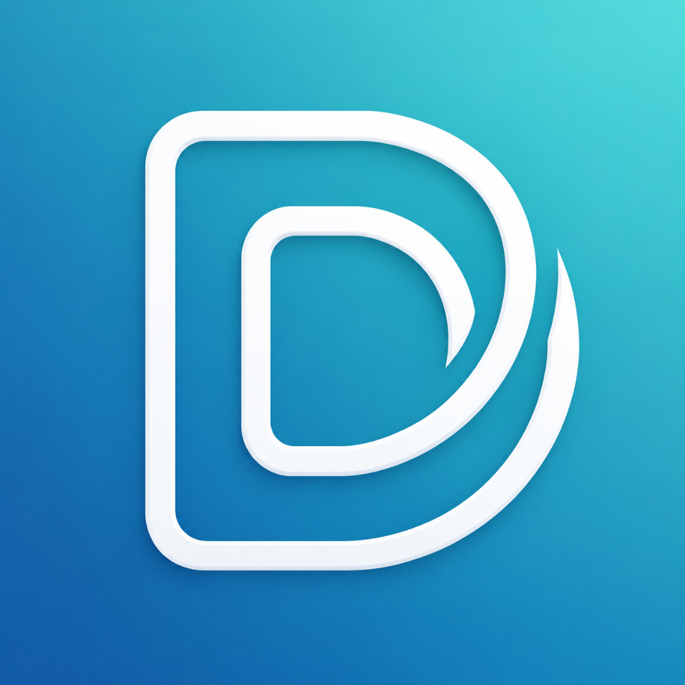

¿En qué idioma quieres usar la app?What language do you want to use the app in?En quin idioma vols fer servir l'aplicació?In quale lingua vuoi usare l'app?Dans quelle langue voulez-vous utiliser l'appli ?In welcher Sprache möchtest du die App nutzen?
El DNI, carnet de conducir, tarjeta de discapacidad y demás papeles de tu gente, siempre a mano.
Sin conectar ninguna nube, tus documentos solo estarán en este móvil. Podrás conectar una cuando quieras en Ajustes → Copias de seguridad. Esta app no tiene servidor propio.